Sistema web de gerenciamento ferroviário: trens, sensores, leituras, rotas, viagens, alertas e relatórios.
| Perfil | Login de teste (senha 123456) | O que pode fazer |
|---|---|---|
| Gestor (administrador) | gestor@tr4.com | Tudo: trens, sensores, simulador, rotas, viagens, cargas, manutenção, alertas, relatórios e usuários. |
| Maquinista | maquinista@tr4.com | Consulta o próprio trem, seus sensores e leituras, inicia/conclui suas viagens, registra manutenção e gera alertas do seu trem. |
| Cliente (usuário comum) | cliente@tr4.com | Consulta rotas ativas, horários, viagens, cargas e avisos públicos. |
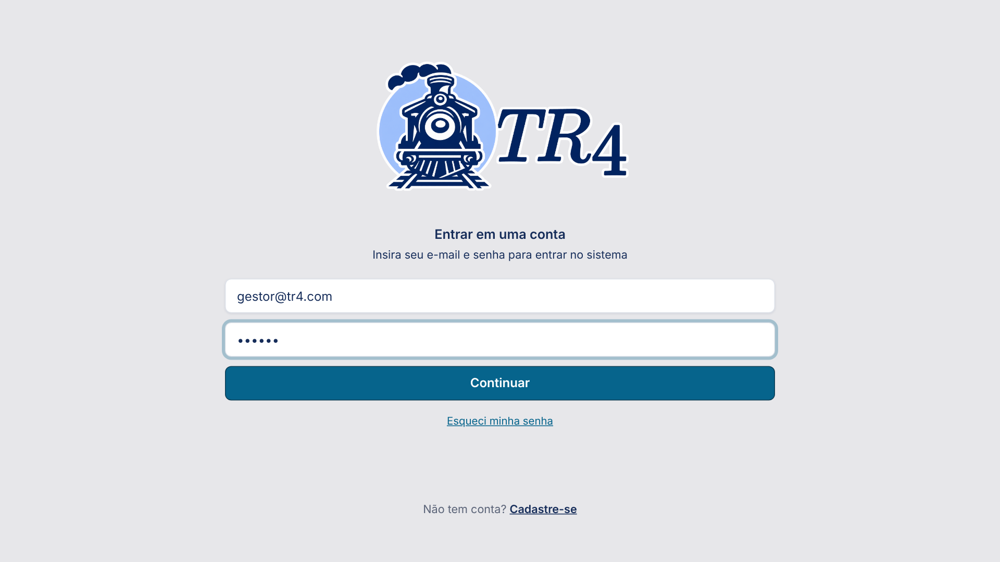
1Abra http://localhost/SA_Ferrorama_TR4, informe e-mail e senha e clique em Continuar; se esqueceu a senha, use Esqueci minha senha para avisar o gestor.
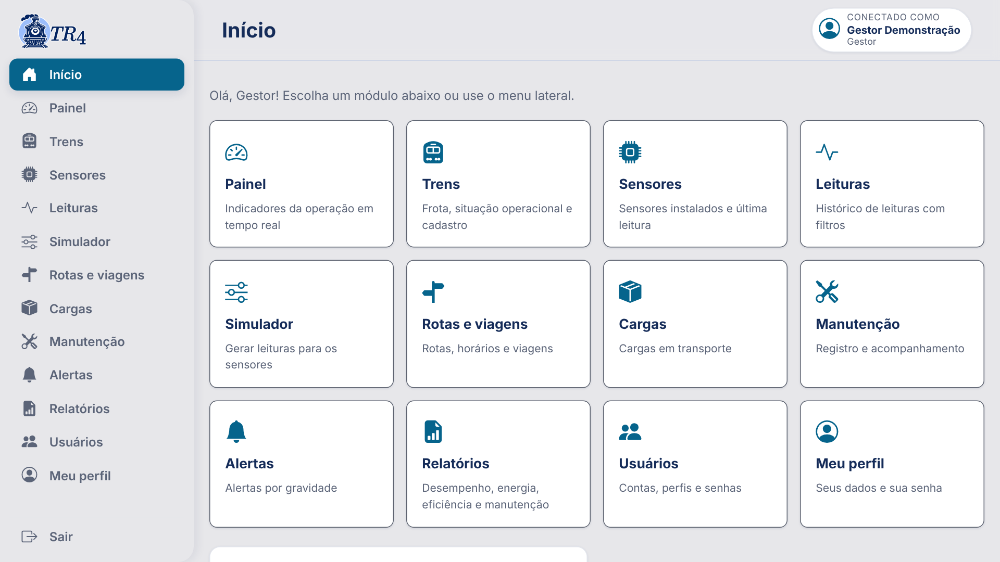
2Depois de entrar, o Início mostra os módulos do seu perfil e o menu lateral fica sempre visível à esquerda, com o usuário conectado no canto superior direito.
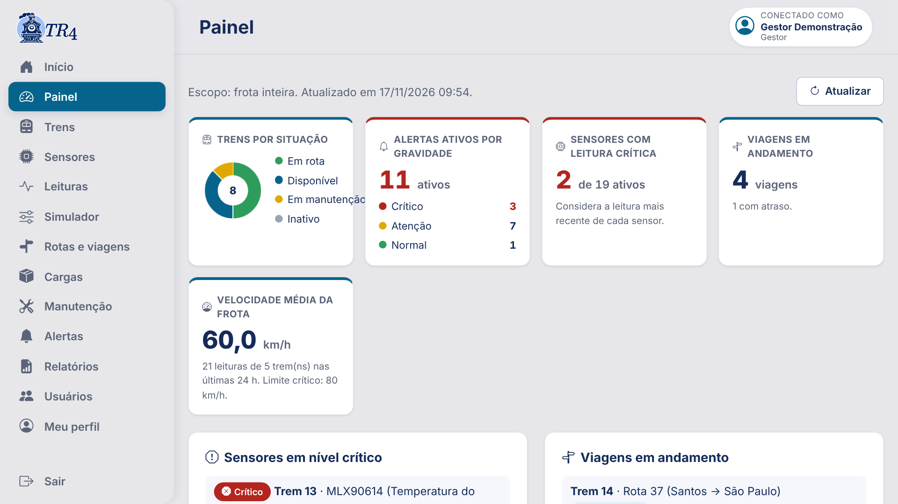
3O Painel traz cinco indicadores calculados no banco: trens por situação, alertas ativos por gravidade, sensores com leitura crítica, viagens em andamento e velocidade média da frota.
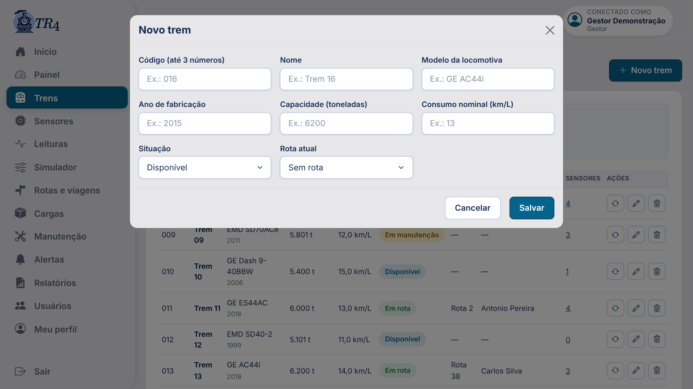
4Em Trens, clique em Novo trem para cadastrar; os ícones de cada linha alteram a situação operacional, editam ou excluem o trem.
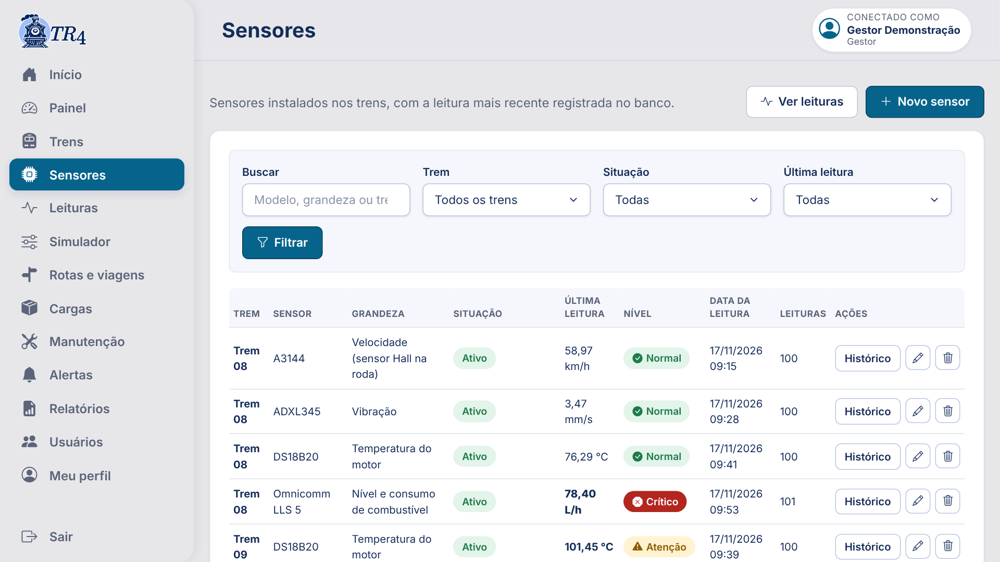
5Em Sensores cada sensor aparece com a leitura mais recente gravada e seu nível; sensores ainda sem leitura mostram Sem leituras.
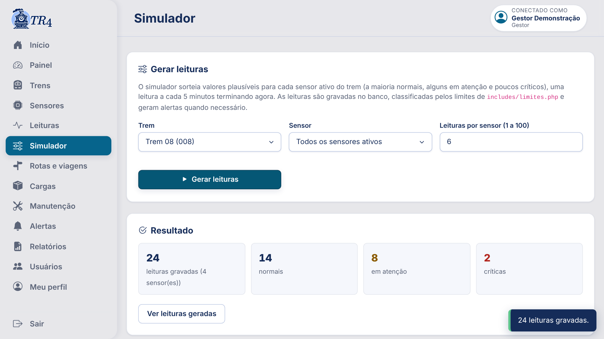
6No Simulador (gestor), escolha o trem e a quantidade e clique em Gerar leituras: elas são gravadas no banco e classificadas pelos limites.
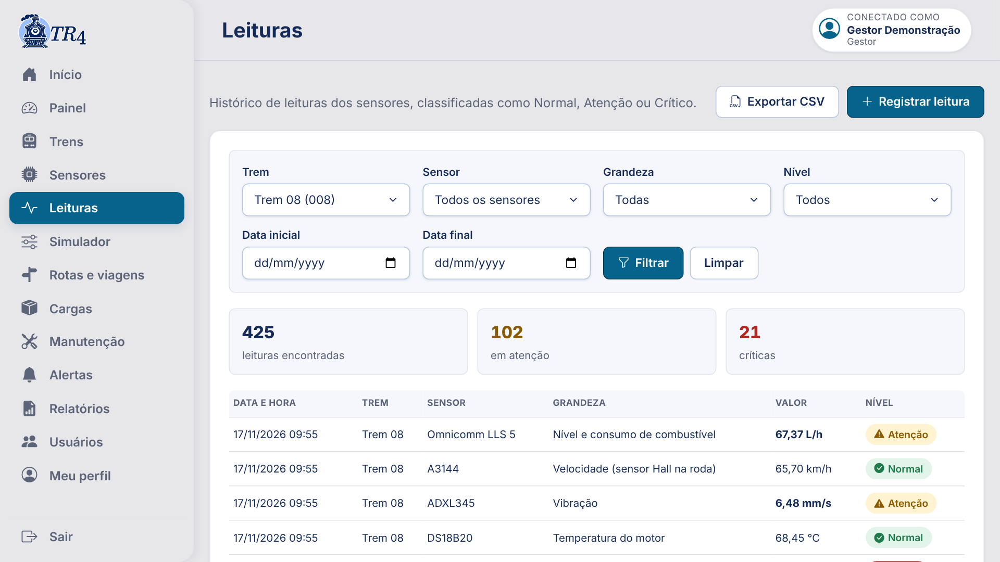
7Em Leituras, filtre por trem, sensor, grandeza, nível e período; use Exportar CSV para abrir os dados no Excel.
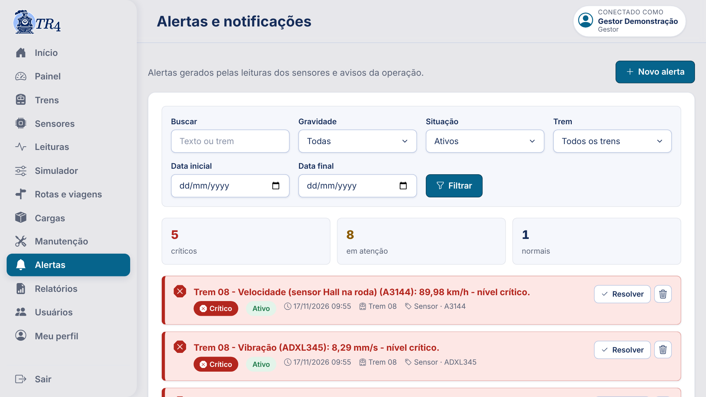
8Em Alertas, os níveis Normal, Atenção e Crítico aparecem separados, com o crítico em vermelho; o gestor pode Resolver e qualquer gestor ou maquinista pode gerar um Novo alerta.
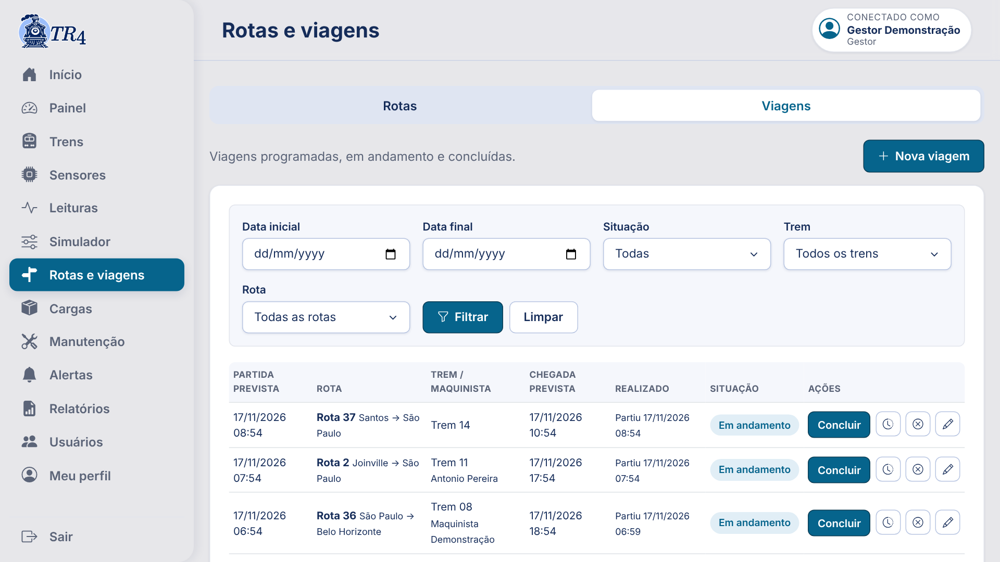
9Em Rotas e viagens, a aba Viagens filtra por data, situação, trem e rota; os botões iniciam, concluem, informam atraso ou cancelam a viagem.
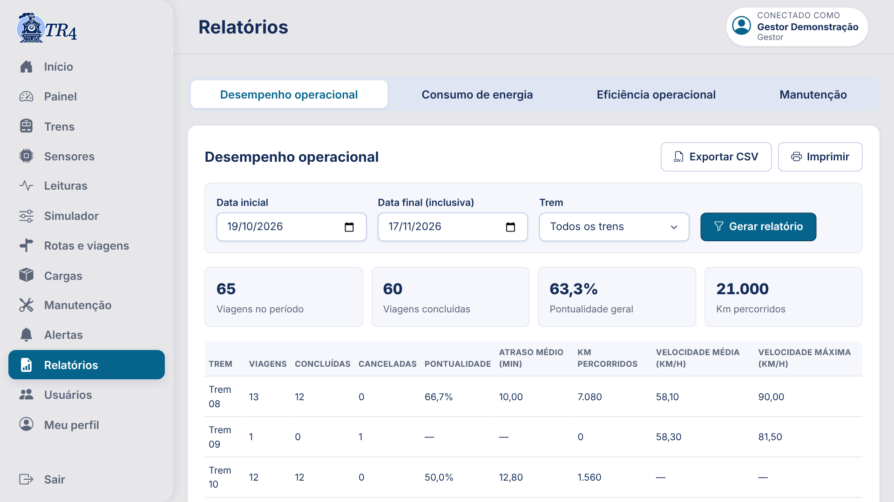
10Em Relatórios, escolha a aba (desempenho, energia, eficiência ou manutenção), defina o período — a data final é incluída — e use Exportar CSV ou Imprimir.
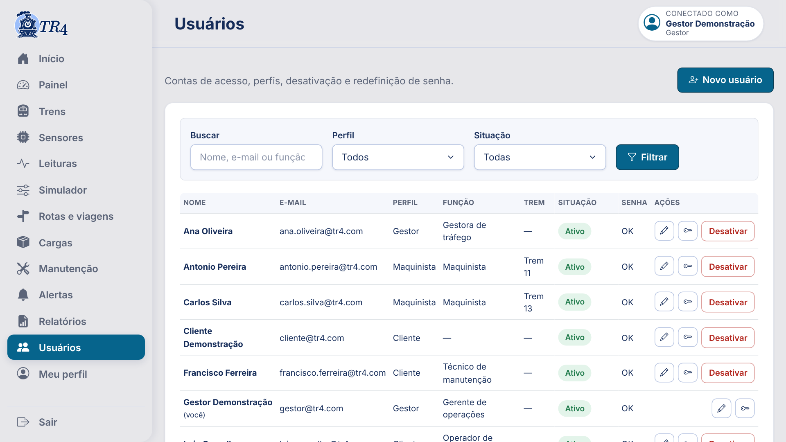
11Em Usuários (gestor), cadastre contas, altere o perfil, desative ou reative e use o ícone de chave para gerar uma senha temporária, trocada no próximo acesso.
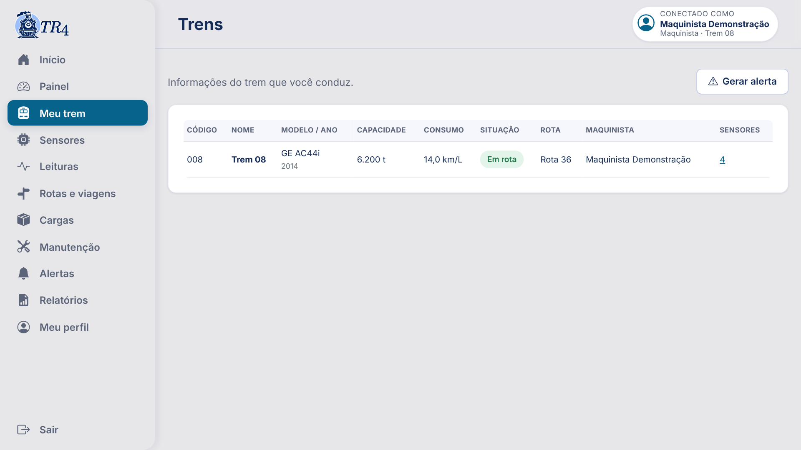
12O maquinista vê apenas o próprio trem em Meu trem, sem botões de cadastro ou exclusão, e pode Gerar alerta sobre ele.
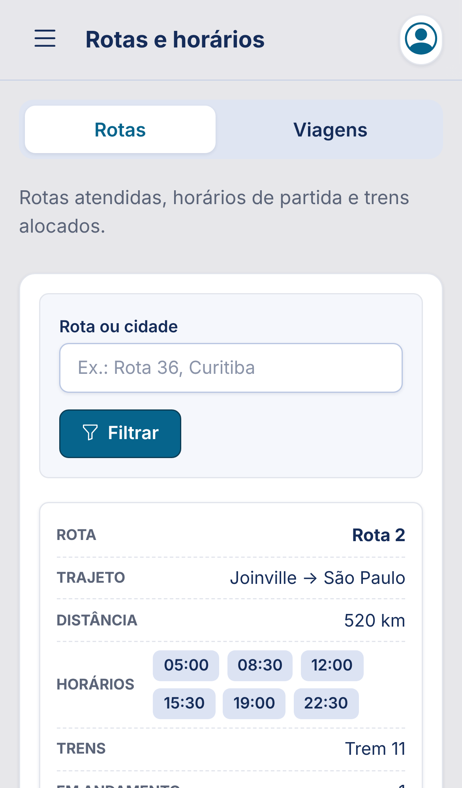
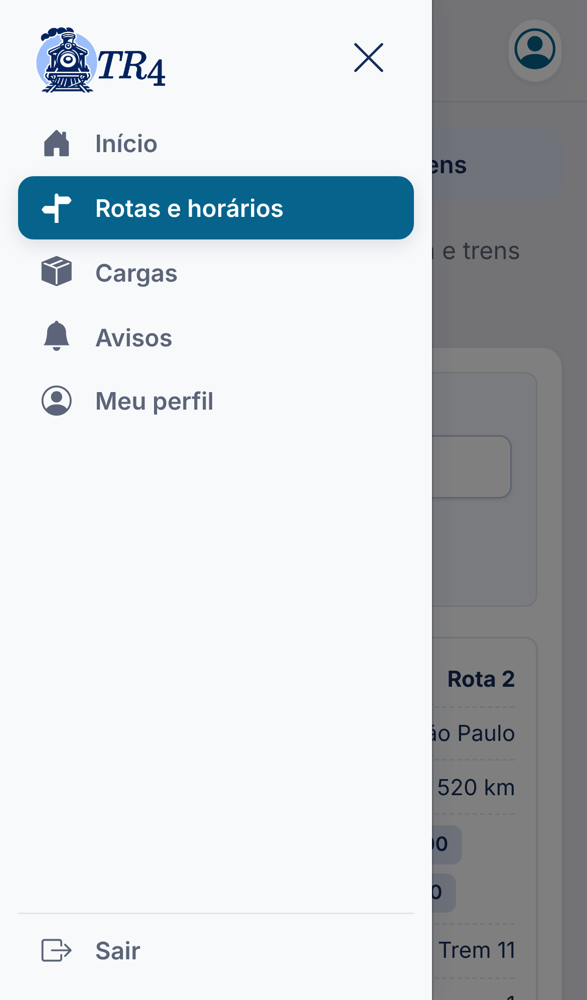
13No celular, as tabelas viram cartões com o nome de cada campo, sem rolagem lateral; esta é a tela de rotas do cliente.
14O botão ☰ no cabeçalho abre o menu, que mostra somente as opções do perfil; o X fecha o menu.
15Para sair, use Sair no fim do menu; a sessão é encerrada e o botão voltar do navegador não reabre o sistema.
Limites de alerta (arquivo includes/limites.php): velocidade > 70 km/h atenção e > 80 crítico; temperatura do motor > 95 °C e > 105 °C; consumo > 65 L/h e > 75 L/h; vibração > 5,5 mm/s e > 7 mm/s.